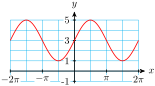
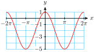
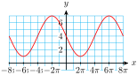
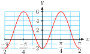

Changes to the amplitude, period, and midline of the basic sine and cosine graphs are called transformations. Changing the midline shifts the graph vertically, changing the amplitude stretches or compresses the graph vertically, and changing the period stretches or compresses the graph horizontally.
The order in which we apply transformations to a function makes a difference in the graph.
Amplitude, Period, and Midline of Sinusoidal Functions.
If \(n\) is a positive integer, the equations \(\sin (n\theta) = k\) and \(\cos (n\theta) = k\) each have \(2n\) solutions between \(0\) and \(2\pi\text{,}\) for \(-1\lt k \lt 1\text{.}\)
The equation \(\tan (n\theta) = k\) has one solution in each cycle of the graph.
Using a Substitution to Solve Trigonometric Equations.
To solve the equation \(\sin (Bx+C)=k\) or \(\cos (Bx+C)=k\text{:}\)
Substitute \(\theta = Bx+C\text{,}\) and find two solutions for \(\sin (\theta) = k\) or \(\cos (\theta) = k\text{.}\)
Replace \(\theta\) by \(Bx+C\) in each solution, and solve for \(x\text{.}\)
Find the other solutions by adding multiples of \(\dfrac{2\pi}{B}\) to the first two solutions.
To solve the equation \(\tan (Bx+C)=k\text{:}\)
Substitute \(\theta = Bx+C\text{,}\) and find one solution for \(\tan (\theta) = k\text{.}\)
Replace \(\theta\) by \(Bx+C\) and solve for \(x\text{.}\)
Find the other solutions by adding multiples of \(\dfrac{\pi}{B}\) to the first solution.
ExercisesReview Problems
Exercise Group.
For Problems 1–4, state the amplitude, period, and midline of the graph.
1.
\(y=4-2\sin (3x)\)
2.
\(y=1+5\cos \left(\dfrac{x}{2}\right)\)
3.
\(y=2.5\cos (\pi x) - 2\)
4.
\(y=0.8\sin \left(\dfrac{\pi x}{6}\right) + 0.3\)
Exercise Group.
For Problems 5–8, use transformations to sketch graphs of the functions.
5.
\(f(t)=2+3\cos (t)\)
6.
\(g(t)=-4-2\sin (t)\)
7.
\(h(w)=-4\sin (\pi w)\)
8.
\(q(w)=3-\cos \left(\dfrac{w}{2}\right)\)
Exercise Group.
For Problems 9–12, write an equation for the graph using sine or cosine.
9.

10.

11.

12.

Exercise Group.
For Problems 13–16, complete the table of values and sketch a graph of the function.
Use a calculator to graph the function for \(0 \le x \le 2\pi\text{.}\)
Use the intersect feature to find all solutions between \(0\) and \(2\pi\text{.}\) Round your answers to hundredths.
19.
\(\displaystyle y=-5\cos (2x-0.5)+3\)
\(\displaystyle -5\cos (2x-0.5)+3=-1\)
20.
\(\displaystyle y=2-4\sin 3(x+0.2)\)
\(\displaystyle 2-4\sin 3(x+0.2)=5\)
Exercise Group.
For Problems 21–22, write a formula for the function.
21.
The average high temperature in Phoenix, Arizona is minimum in January at 66\(\degree\) and maximum in July at 105\(\degree\text{.}\) Write a sinusoidal function that models the average high temperature in Phoenix.
22.
The average monthly rainfall in Hawaii reaches a maximum of 3.4 inches in December and a minimum of 0.4 inches in June. Write a sinusoidal function that models the monthly rainfall in Hawaii.
Exercise Group.
For Problems 23–24,
Estimate the amplitude, period, and midline of a circular function that fits the data.
Write a formula for the function.
23.
\(x\)
\(0\)
\(2\)
\(4\)
\(6\)
\(8\)
\(10\)
\(12\)
\(14\)
\(y\)
\(12\)
\(13.4\)
\(16.2\)
\(18\)
\(17\)
\(14.1\)
\(12.1\)
\(12.7\)
24.
\(x\)
\(0\)
\(0.05\)
\(0.1\)
\(0.15\)
\(0.2\)
\(0.25\)
\(0.3\)
\(0.35\)
\(0.4\)
\(y\)
\(8\)
\(10.4\)
\(11.8\)
\(11.8\)
\(10.4\)
\(8\)
\(5.6\)
\(4.2\)
\(4.2\)
Exercise Group.
For Problems 25–28, give exact values for the solutions between \(0\) and \(2\pi\text{.}\)
25.
\(10\sin (2\theta) = -5\)
26.
\(\sqrt{2}\cos (3\phi) = 1\)
27.
\(12\tan (4\beta) = 0\)
28.
\(2\sqrt{3}\tan (2\alpha) = -6\)
Exercise Group.
For Problems 29–32, find all solutions between \(0\) and \(2\pi\text{.}\) Round your answers to three decimal places.
29.
\(5\tan (3x)+2 = 3\)
30.
\(-8\sin (2t) - 4 = 3\)
31.
\(2.8 - 3.6\cos (2s) = 5.2\)
32.
\(6.7 \tan (3u) + 1.2 = 28\)
Exercise Group.
For Problems 33–36, use a substitution to find exact values for all solutions between \(0\) and \(2\pi\text{.}\)